Understand finances
Users have access to balances and transactions but they still have to interpret what it means to them.
UX Design | User Research | AI | Banking | Interaction Design

Tieto Banktech gave us an open brief: Building a future AI Banking Agent. With significant freedom to define the problem space ourselves, no predefined user problem and no fixed solution we had four requirements to meet:
Clear AI labeling
Traceability
Secure data handling
No financial advice
I used a mixed-method approach to understand how people use digital banking today and where AI could provide real value.
View the full process including research, ideation and documentation → LINK
Survey
90 responses
In-depth Interviews
5 participants
Synthesis
Survey
An interesting early finding is it wasn't simply about being for or against AI. It depended on what we were asking AI to do. Comfort generally decreases as AI moves from supporting the user towards acting on their behalf. This led us to explore where users draw the line between AI supporting them and AI acting on their behalf.
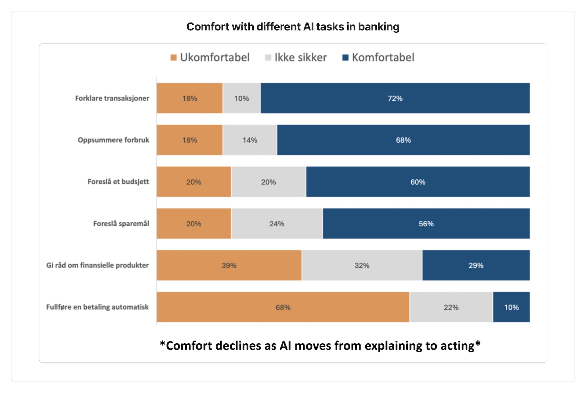
In-depth interviews
While the survey gave us broader patterns, the interviews gave us the reasoning behind them. Interview transcript were analyzed through open coding, then brought together through affinity mapping.
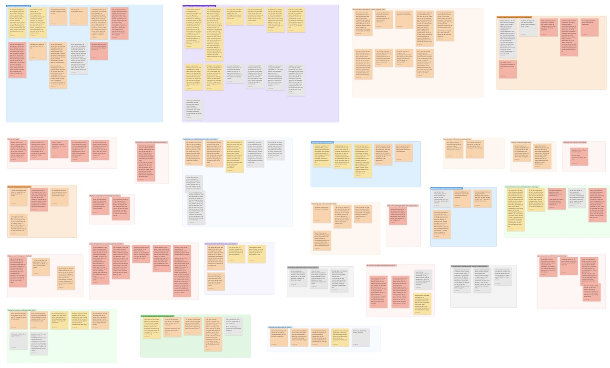
From synthesis, five recurring themes emerged: building trust in AI, human oversight, understanding financial information, proactive assistance and inclusive design.
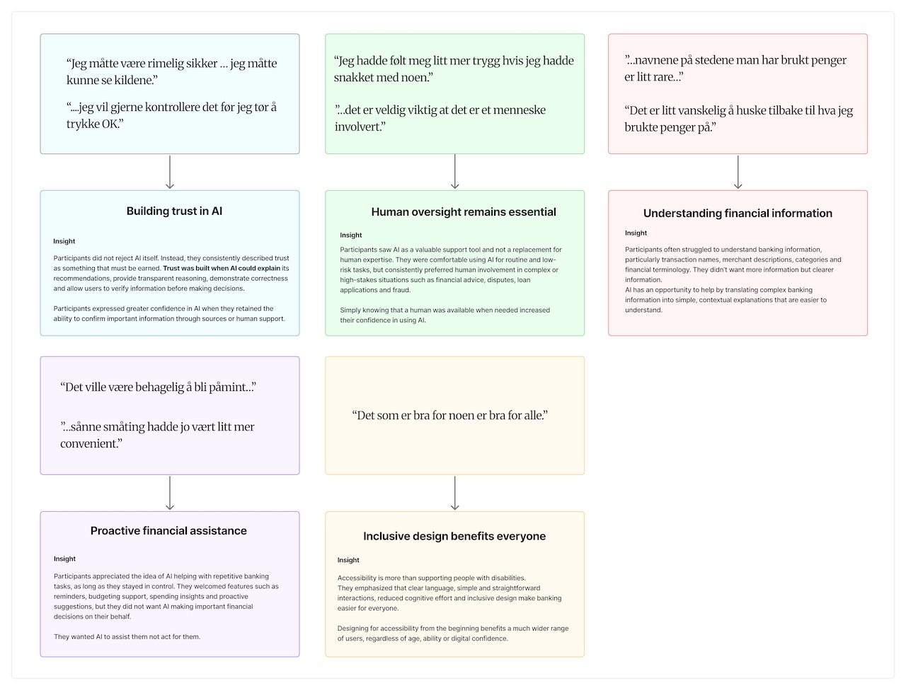
Narrowing the themes by following the pattern the key insights are:
Understand finances
Users have access to balances and transactions but they still have to interpret what it means to them.
Reduce effort
Users valued banking experiences that were simple and efficient. The problem wasn't missing information but to interpret it.
Maintain control
Users were open to AI support, but only if they remained aware of what AI was doing and could verify the information behind it.
The research raised two central questions that shaped the direction of the project:
How should AI fit into the banking experience? and How can AI uniquely add value?
To explore possible answers, I facilitated a Crazy 4 workshop with the team to generate a broad range of ideas across trust, financial clarity, human support and AI interaction. Five How Might We questions were then developed to bridge the research insights and ideation.
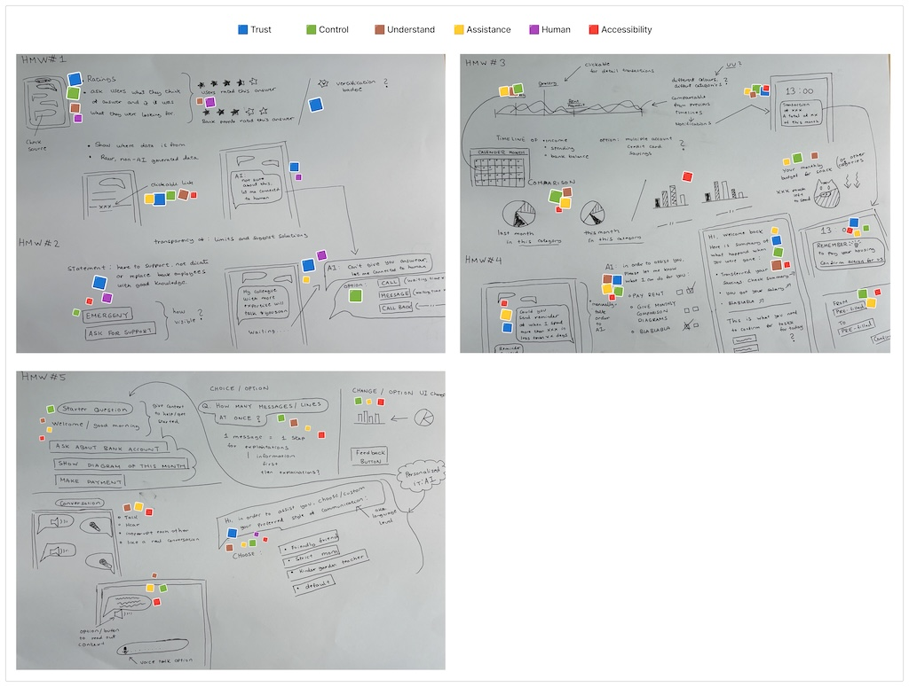
The hardest part of this project wasn't designing the solution but it was narrowing the problem space. Repeatedly questioned whether AI was actually necessary for each problem area. Navigation issues? Better conventional UX could solve that. But understanding and sense-making while connecting, comparing and explaining financial information was where AI could genuinely reduce cognitive effort in a way traditional banking interfaces cannot.
As the sole UX designer on the team, I was responsible for driving this narrowing process and defining the design opportunity:
How might we use AI to reduce the cognitive effort required to understand personal financial information while keeping the user informed and in control?The IA and user flows show how the research insights were translated into a product structure and two core user scenarios.
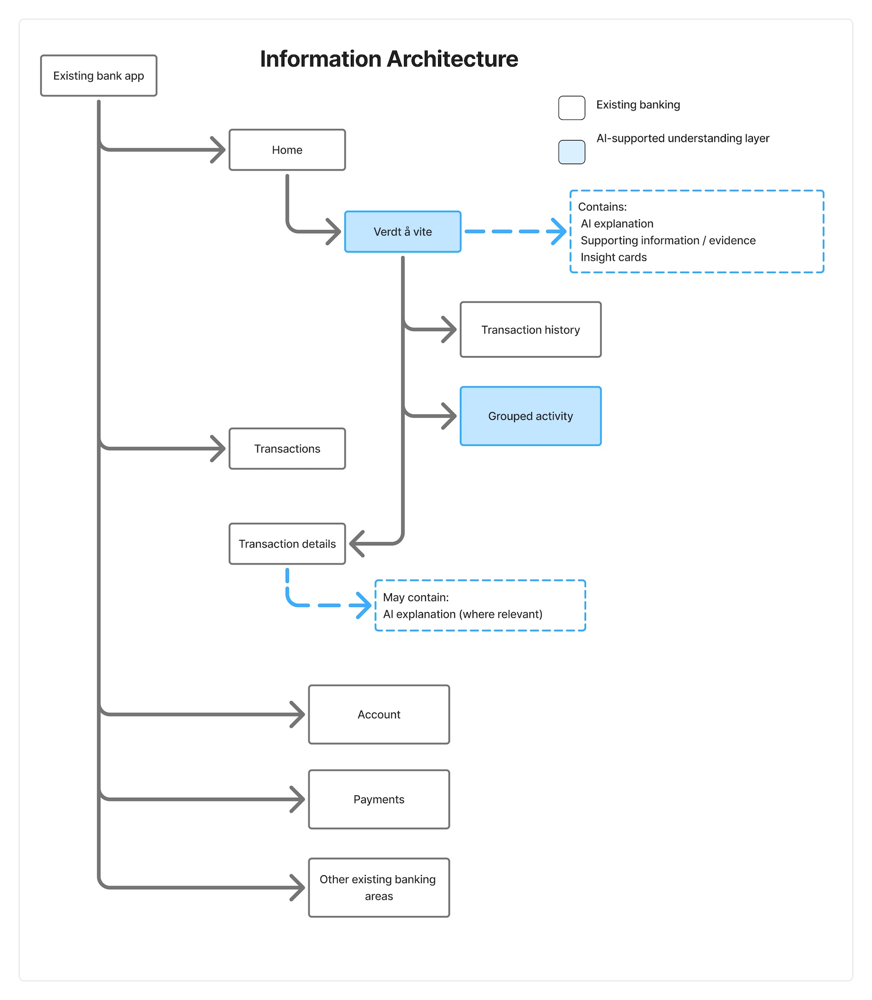
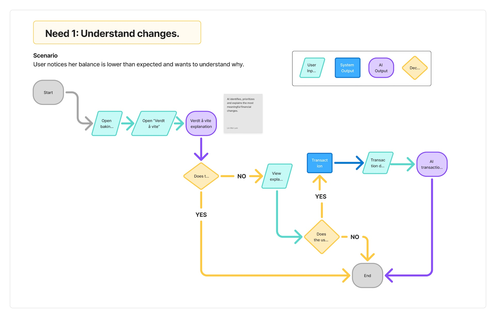
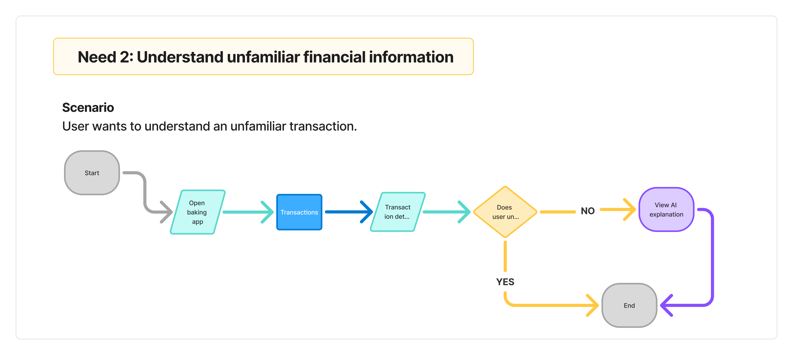
The concept was first developed as a mid-fidelity prototype and tested with four participants before moving to high-fidelity.
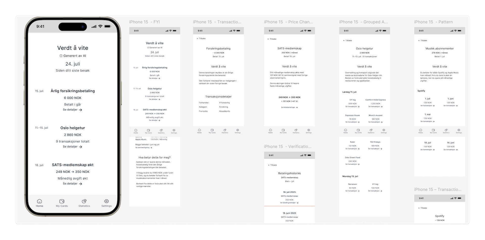
Verdt å vite is a proactive AI understanding layer integrated into banking. Instead of requiring users to ask questions, it identifies meaningful changes and patterns in existing financial data and explains what happened – in plain language. AI performs the analysis. The user performs the understanding. The experience is built around four AI Insight Patterns: Important Event, Change, Grouped Activity and Pattern – each designed to surface only what is genuinely worth knowing.
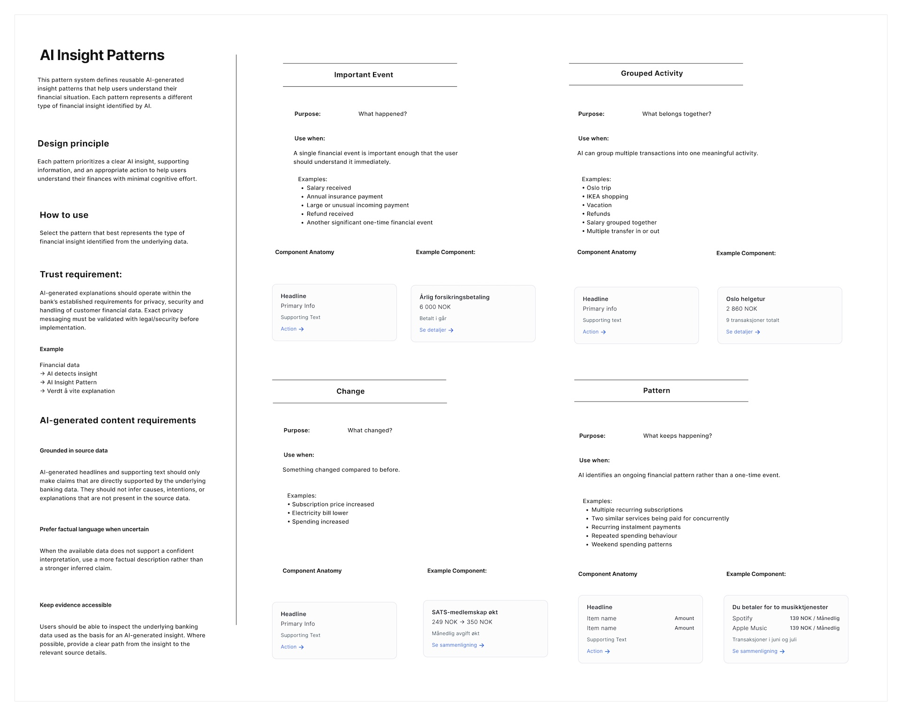
The final high-fidelity prototype is available to explore interactively:
View interactive prototype in Figma →View the full process including research, ideation and documentation:
View full process in FigJam →The concept was evaluated through remote user testing with four participants. The team presented the final demo to the entire BaaP unit at Tieto Banktech and was spontaneously invited to present at AI Inspiration Day. The team will also present at Tieto Banktech's Banking User Forum in October 2026.
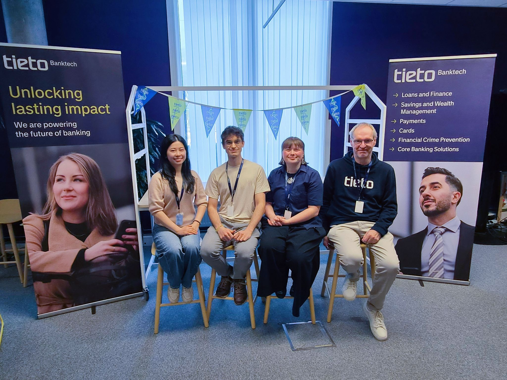
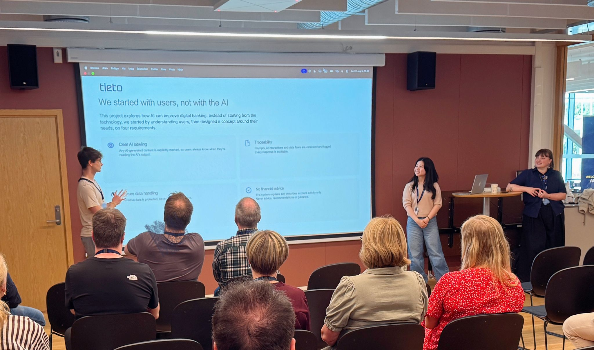
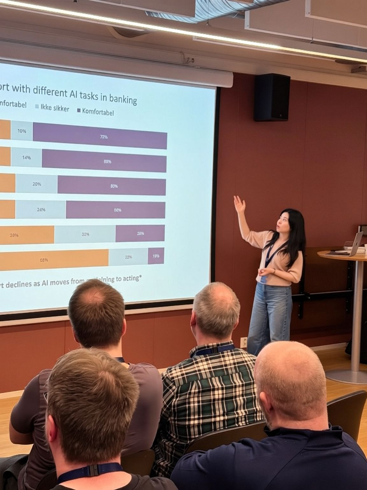
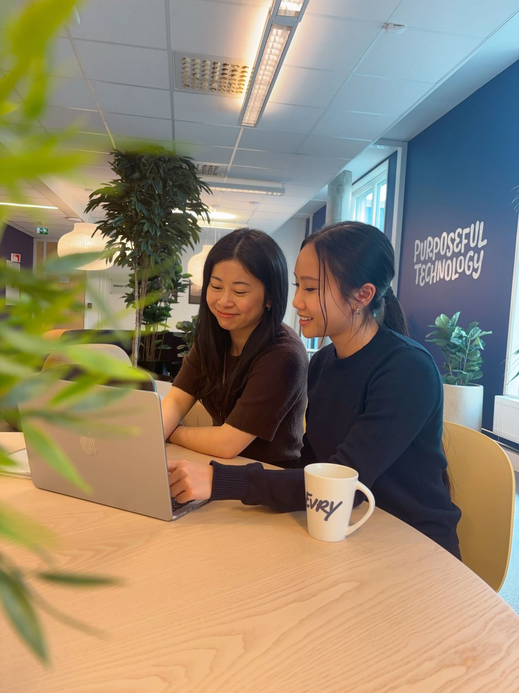
This project taught me how to work in a genuinely open-ended design process where the hardest challenge wasn't designing the solution, but defining the right problem. The most valuable lesson is to question whether AI is actually necessary before designing with it. Not everything needs AI. But when it reduces real cognitive effort for real people, it earns its place.